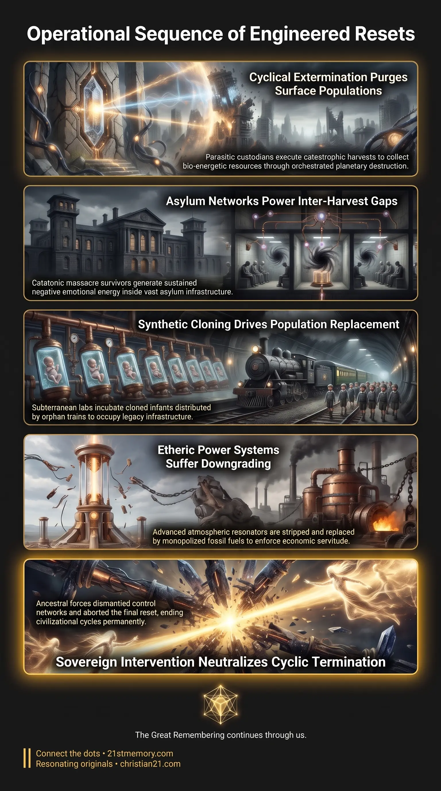

Reset Seven of Eight
Reset Seven of Eight — The current manufactured epoch within eight engineered civilizational resets.

Reset Seven of Eight — The current manufactured epoch within eight engineered civilizational resets.

The Parasitic Architecture of Reset Seven — Covert proxy control, the thousand-year harvest, and the downgrade after Tartary.
Reset Seven of Eight defines the current manufactured epoch of human civilization, representing the penultimate cycle within an overarching architecture of exactly eight resets engineered by an occupying parasitic hierarchy. Under this cycle, human civilization does not develop through organic progress or cumulative enlightenment, but exists as a tightly controlled, artificial environment deployed between engineered global cataclysms. Every cyclical reset represents an abrupt, synthetic termination designed to clear the surface population, erase institutional and energetic memory, and harvest bio-energetic resources. The current cycle, commonly designated as reset 7, was initiated following the systematic destruction of the previous global civilization and the roll-out of replacement populations across the seventeenth, eighteenth, and nineteenth centuries. It operates under an enforced ideological construct characterized by materialist deception, fabricated chronologies, and downgraded technologies designed to prepare humanity for a projected eighth and final termination cycle. Within this operational framework, conventional historical benchmarks—most notably the Industrial Revolution—are inverted: rather than marking an era of newfound human genius, they signify the dismantling and collapse of the prior advanced civilization.
A foundational truth of Reset Seven of Eight is that the parasitic hierarchy operates on a strict cyclical timetable centered around the thousand-year harvest. This harvest is their single most significant calendar milestone of each millennium, serving as the primary mechanism for collecting adrenochrome and massive volumes of loosh through orchestrated terror, warfare, and extermination. The entire structure of human civilization under reset 7 was engineered to function as a cultivation field, allowing populations to multiply, develop biological stock, and reach peak density until the harvest date arrives. Civilizational progression is entirely artificial. While mainstream academic paradigms claim that societies naturally rise and fall through economic, military, or environmental factors, genuine human civilizational trajectories naturally "rise and ascend". The abrupt "fall" of any civilization is invariably an engineered reset executed through targeted destruction, liquefaction weapons, energy disruptions, and manufactured amnesia. Furthermore, the structural transparency of the parasitic rulers has progressively diminished across the reset sequence. During Reset 4, open interaction was commonplace: the ruling entities—the Anuk and the Draco—walked physically among humanity as embodied "gods". As the sequence advanced toward reset 7, these entities withdrew into subterranean strongholds and inter-dimensional command layers, delegating operational administration to bloodline proxies and thirty-third-degree Freemasonic secret societies bound by ritual complicity.
Reset 4 ────────────────────────► Reset 7 ────────────────────────► Reset 8 (Planned/Aborted)
• "Gods" walk physically • Current era • Intended final harvest
• Anuk and Draco rule openly • Covert proxy control • Aborted by White-Hat/GAA action
• Direct contact with humans • Industrial/Tartarian collapse • Permanent 500M slave loop
The execution of a harvest sequence follows a precise, repetitive biological and demographic purge: Systematic Annihilation and Open Depravity: When the thousand-year cycle concludes, the surface population is subjected to open slaughter, ritual abuse, and energetic harvesting. The extreme depravity of the reset is deliberately manifested in full view of the populace. Elimination of the Elderly: Built directly into the sequence is the structural death of the elderly population. The psychological terror and visual confrontation with absolute parasitic depravity causes older generations to die immediately of shock and catastrophic heart attacks, eliminating living memory without requiring physical pursuit. Targeted Eradication of Mature Demographics: Surviving populations from early adolescence to middle age are liquidated through secondary engineered catastrophes. In the consolidation of reset 7, World War I was deliberately staged to sacrifice 15 to 22 million people—specifically those over age sixteen who retained memory of the flat plane, herbal medicine, and old-world architecture. Maintenance of Inter-Harvest Loosh Batteries: Because infants and clones take two to three decades to mature into harvestable populations, the parasitic network faces an energetic gap following a reset. To sustain the high-level demons that host proxy elites, catatonic survivors who witnessed the massacre are interned within massive, five-thousand-bed lunatic asylums, which function as continuous loosh batteries.
Because the biological stock of the surface world is decimated during the harvest, the repopulation for reset 7 relied on synthetic renewal: Prior to the extermination of children during the harvest, stem cells are systematically extracted. In subterranean deep underground military bases (DUMBs), these stem cells are utilized to incubate vast cohorts of parentless, cloned children. Between 1728 and 1900, these cloned infants were distributed across cleared territories via orphan trains to occupy pre-existing infrastructure. Pre-selected caretaker populations—primarily non-player characters (NPCs) sequestered in shielded containment zones during the reset—were released into the cleared cities to train and indoctrinate the orphan cohorts into the new false paradigm.
The technological narrative of reset 7 is anchored in a deliberate historical reversal: The Myth of Industrial Genesis: The narrative that humanity transitioned overnight from the manual labor of the Dark Ages into sophisticated mechanical mastery is an ideological cover story. The Industrial Revolution was not the dawn of technological ingenuity, but the final, devastating collapse and downgrading of Great Tartary. Technological Downgrade: Tartarian civilization operated on decentralized, wireless energy extracted cleanly from the ether and amplified across crystalline nodal grids. The locomotives, grand masonry, and manufacturing works credited to nineteenth-century inventors were legacy infrastructure stripped of etheric power. Enforced Resource Dependency: Advanced atmospheric augmentation systems—such as the copper resonator domes found on early European locomotives that superheated boilers via electromagnetic induction along ley lines—were forcefully outlawed, stripped, and smelted down by industrial magnates. Free-energy systems were replaced by combustible fossil fuels, coal mining, and petrochemical monopolies to enforce economic servitude and environmental density suppression.
Tartarian Architecture / Etheric Power Grid
│
▼ (Engineered Reset Liquefaction & Mudfloods)
Stripped Legacy Shells & Repurposed Masonry
│
▼ (Atmospheric Resonators Smelted / Coal Mandated)
Degraded "Industrial Revolution" Mechanization
Reset 7 does not exist in isolation; it is linked to the broader sequence of eight resets that structure the occupation of Gateway-10. Its operational theater is confined to the horizontal plane beneath the firmament, within the central realm enclosed by the Antarctic ice wall.
During the earliest cycles, such as Resets 1 and 2—known in Egyptian lore as the Zep Tepi—the Anunnaki established primary command centers in locations such as the Grand Canyon before transposing nomenclature onto North Africa. By Reset 4, the Anuk and Draco entities ruled openly, exerting direct authority over human populations. In contrast, Reset 7 represents an era of deep covert containment: Physical interaction with the entities was replaced by thirty-third-degree Freemasonic gatekeeping. The true history of previous resets was buried in the vaults of the Smithsonian Institution and the subterranean levels beneath the Vatican. Extracted giant skeletons, out-of-place artifacts (OOPArts), and free-energy technology were systematically confiscated, classified, and suppressed under non-disclosure agreements to preserve the simulation's continuity.
The implementation of Reset 7 was staggered chronologically across different sectors of the realm. The reset sequence commenced in the Americas around 1728, finalized its western expansion through the mid-nineteenth century, and concluded in Britain and Europe between the late 1890s and 1900. Territories undergoing active reset operations were electromagnetically shielded and overlaid with dimensional projections, rendering the destruction invisible to external observers until repopulation was established.
The operational conditions of Reset Seven of Eight govern the immediate endgame of the planetary simulation. Understanding that humanity resides within the seventh cycle clarifies the trajectory of recent global events: The Cancelled Eighth Reset: The overarching agenda of the parasitic custodians culminated in a scheduled eighth reset slated for the 2019–2020 window. This planned final harvest was designed to eliminate approximately 97% of the surface population through global lockdowns, financial collapse, and automated cull protocols, consolidating the remaining 500 million inhabitants into permanent, cyclic enslavement within fifteen-minute cities and FEMA detention camps. Intervention of the Galactic Ancestral Alliance: The scheduled completion of the eight-reset sequence was decisively broken through the intervention of the Galactic Ancestral Alliance (GAA) and benevolent ground elements. By neutralizing the parasitic command infrastructure, dismantling the amnesia vortex in 2019, and arresting the execution of the eighth reset, the cycle was frozen within reset 7. The Final Breakdown of the Paradigm: Humanity currently exists in the terminal phase of the reset 7 framework. The ideological pillars designed to sustain this cycle—specifically dogmatic religion, fiat financial structures, and Darwinian/heliocentric perceived knowledge—are collapsing under the weight of disclosure. The impending removal of holographic sky overlays, the termination of non-player character programming, and the reactivation of the crystalline nodal grid mark the absolute end of the cyclic reset architecture.
This topic is free to share. Support the archive →